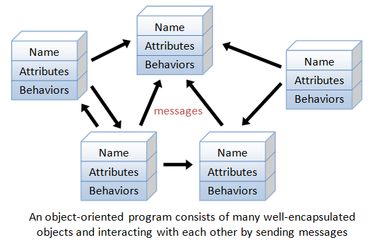
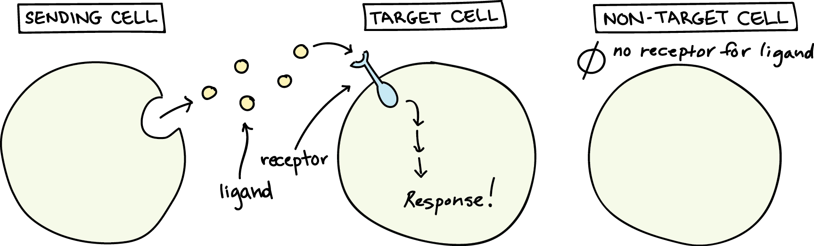

Object-oriented programming, Lee Bul and the awareness of SELF
I went to the Hayward Gallery this week, where they were showing a retrospective of Korean artist Lee Bul. The work in the last room, which felt like the grand finale, was called 'Via Negativa'. It was a sculpture which consisted of a maze of fragmented mirrors leading to a central room with an infinity mirror chamber, surrounded by lights.
People really did like taking selfies in this work. The outside of the structure is covered by pages of Julian Jaynes' 'The origin of consciousness', printed in reverse. A quote from this book shows some of Lee Bul's thinking behind this structure, which disorients the viewer through continuously shifting reflections of their own image as they walk through.
"Originally, humans thought that self-consciousness was either their own thought, or the voice of God. As people’s lives began to get more complicated, the two territories have become connected and, while going back and forth between the two self-consciousnesses, we look and review [the ways in which] our selves come about."
While looking at this work, I started thinking about the idea of self awareness and the self as an object.
In computer programming, in various languages, this, self, and Me are keywords used to refer to the object, class, or other entity of which the code is part. It is a defining concept within object-oriented programming. In human psychology, self-awareness, which emerges at around 18 months of age, also is the point at which we are able to evaluate ourselves in relation to others.
If we think about it - this habit of thinking of ourselves as objects, and others as objects, and all of our relationships as objects, as we do when we are reflecting in a self-aware way, we might easily understand why this approach was invented, and how it is in a certain way, intuitive for humans to use.
Object-oriented programming, is known a paradigm in which all computations are carried out using objects. Classes, objects, methods are all ways of defining objects, creating them, and relating them to each other.
[2]
Correspondingly, our ability to understand ourselves and the natural world by looking at processes as objects (think of any word that ends in '-ment' or '-tion', turning a verb into a noun) lends itself well to the thinking behind OO. Indeed, the inventor of Object Oriented Programming, Alan Kay, took inspiration from biology when he was developing the language Smalltalk in 1980. One of his inspirations was the biological cell - and how it as a self-contained unit communicated with other cells via chemical messages.
 [3]
It occurred to me that object-oriented-ness was not only a computer science methodology, but a way of thinking. And perhaps, learning to see things more explicitly in terms of objects would greatly help with the task of translating them to code in an object-oriented language.
I'll give an example! For example, a certain study about bodily self consciousness looks into the way that we might be aware of objects through other people's awareness of them.
Though this might seem to be a quite subtle and abstract phenomenon, we might be able to apply this to the hard logic of the computer by thinking of this process through OO programming. What if we were to consider Abel and objects that he is aware of through Bill as a has-many-through relationship?
What other possibilities exist in translating concepts in the natural world to code? Food for thought.
https://creators.vice.com/en_us/article/ez5nxa/lee-buls-labyrinth-of-infinity-mirrors-via-negativa-ii-video ↩︎
https://www3.ntu.edu.sg/home/ehchua/programming/cpp/cp3_OOP.html ↩︎
https://www.khanacademy.org/science/biology/cell-signaling/mechanisms-of-cell-signaling/a/introduction-to-cell-signaling ↩︎
https://ai2-s2-public.s3.amazonaws.com/figures/2017-08-08/53785ffd81fe6a4445a045324ada9b8099833d05/5-Figure1-1.png ↩︎
{kind=link}